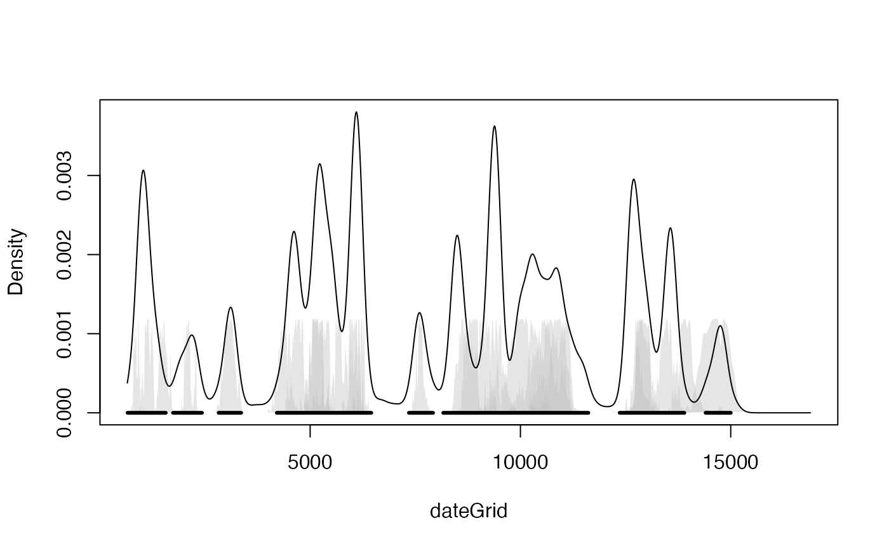

This function runs a non-parametric phase model on 14C and non-14C ages via Gaussian Mixture density estimation
BchronDensity( ages, ageSds, calCurves, pathToCalCurves = system.file("data", package = "Bchron"), dfs = rep(100, length(ages)), numMix = 50, iterations = 10000, burn = 2000, thin = 8, updateAges = FALSE, store_density = TRUE )
| ages | A vector of ages (most likely 14C) |
|---|---|
| ageSds | A vector of 1-sigma values for the ages given above |
| calCurves | A vector of values containing either |
| pathToCalCurves | File path to where the calibration curves are located. Defaults to the system directory where the 3 standard calibration curves are stored |
| dfs | Degrees-of-freedom values for the t-distribution associated with the calibration calculation. A large value indicates Gaussian distributions assumed for the 14C ages |
| numMix | The number of mixture components in the phase model. Might need to be increased if the data set is large and the phase behaviour is very complex |
| iterations | The number of iterations to run for |
| burn | The number of starting iterations to discard |
| thin | The step size of iterations to keep |
| updateAges | Whether or not to update ages as part of the MCMC run. Default is FALSE. Changing this to TRUE will improve performance but will fit a slightly invalid model |
| store_density | Whether or not to store the density and age grid. Useful for plotting the output in other packages |
An object of class BchronDensityRun with the following elements:
thetaThe posterior samples of the restricted ages
pPosterior samples of the mixture proportions
muValues of the means of each Gaussian mixture
calAgesThe calibrated ages from BchronCalibrate
GThe number of mixture components. Equal to numMix
age_gridA grid of ages used for the final density estimate
densityThe density estimate based on the above age grid
This model places a Gaussian mixture prior distribution on the calibrated ages and so estimates the density of the overall set of radiocarbon ages. It is designed to be a probabilistic version of the Oxcal SUM command which takes calibrated ages and sums the probability distributions with the aim of estimating activity through age as a proxy.
Bchronology, BchronRSL, BchronDensityFast for a faster approximate version of this function
# \donttest{ # Read in some data from Sluggan Moss data(Sluggan) # Run the model SlugDens = BchronDensity(ages=Sluggan$ages,ageSds=Sluggan$ageSds, calCurves=Sluggan$calCurves)#> | | | 0% | | | 1% | |= | 1% | |= | 2% | |== | 3% | |== | 4% | |=== | 4% | |=== | 5% | |=== | 6% | |==== | 6% | |==== | 7% | |===== | 8% | |===== | 9% | |====== | 9% | |====== | 10% | |====== | 11% | |======= | 11% | |======= | 12% | |======== | 13% | |======== | 14% | |========= | 14% | |========= | 15% | |========= | 16% | |========== | 16% | |========== | 17% | |=========== | 18% | |=========== | 19% | |============ | 19% | |============ | 20% | |============ | 21% | |============= | 21% | |============= | 22% | |============== | 23% | |============== | 24% | |=============== | 24% | |=============== | 25% | |=============== | 26% | |================ | 26% | |================ | 27% | |================= | 28% | |================= | 29% | |================== | 29% | |================== | 30% | |================== | 31% | |=================== | 31% | |=================== | 32% | |==================== | 33% | |==================== | 34% | |===================== | 34% | |===================== | 35% | |===================== | 36% | |====================== | 36% | |====================== | 37% | |======================= | 38% | |======================= | 39% | |======================== | 39% | |======================== | 40% | |======================== | 41% | |========================= | 41% | |========================= | 42% | |========================== | 43% | |========================== | 44% | |=========================== | 44% | |=========================== | 45% | |=========================== | 46% | |============================ | 46% | |============================ | 47% | |============================= | 48% | |============================= | 49% | |============================== | 49% | |============================== | 50% | |============================== | 51% | |=============================== | 51% | |=============================== | 52% | |================================ | 53% | |================================ | 54% | |================================= | 54% | |================================= | 55% | |================================= | 56% | |================================== | 56% | |================================== | 57% | |=================================== | 58% | |=================================== | 59% | |==================================== | 59% | |==================================== | 60% | |==================================== | 61% | |===================================== | 61% | |===================================== | 62% | |====================================== | 63% | |====================================== | 64% | |======================================= | 64% | |======================================= | 65% | |======================================= | 66% | |======================================== | 66% | |======================================== | 67% | |========================================= | 68% | |========================================= | 69% | |========================================== | 69% | |========================================== | 70% | |========================================== | 71% | |=========================================== | 71% | |=========================================== | 72% | |============================================ | 73% | |============================================ | 74% | |============================================= | 74% | |============================================= | 75% | |============================================= | 76% | |============================================== | 76% | |============================================== | 77% | |=============================================== | 78% | |=============================================== | 79% | |================================================ | 79% | |================================================ | 80% | |================================================ | 81% | |================================================= | 81% | |================================================= | 82% | |================================================== | 83% | |================================================== | 84% | |=================================================== | 84% | |=================================================== | 85% | |=================================================== | 86% | |==================================================== | 86% | |==================================================== | 87% | |===================================================== | 88% | |===================================================== | 89% | |====================================================== | 89% | |====================================================== | 90% | |====================================================== | 91% | |======================================================= | 91% | |======================================================= | 92% | |======================================================== | 93% | |======================================================== | 94% | |========================================================= | 94% | |========================================================= | 95% | |========================================================= | 96% | |========================================================== | 96% | |========================================================== | 97% | |=========================================================== | 98% | |=========================================================== | 99% | |============================================================| 99% | |============================================================| 100%# }